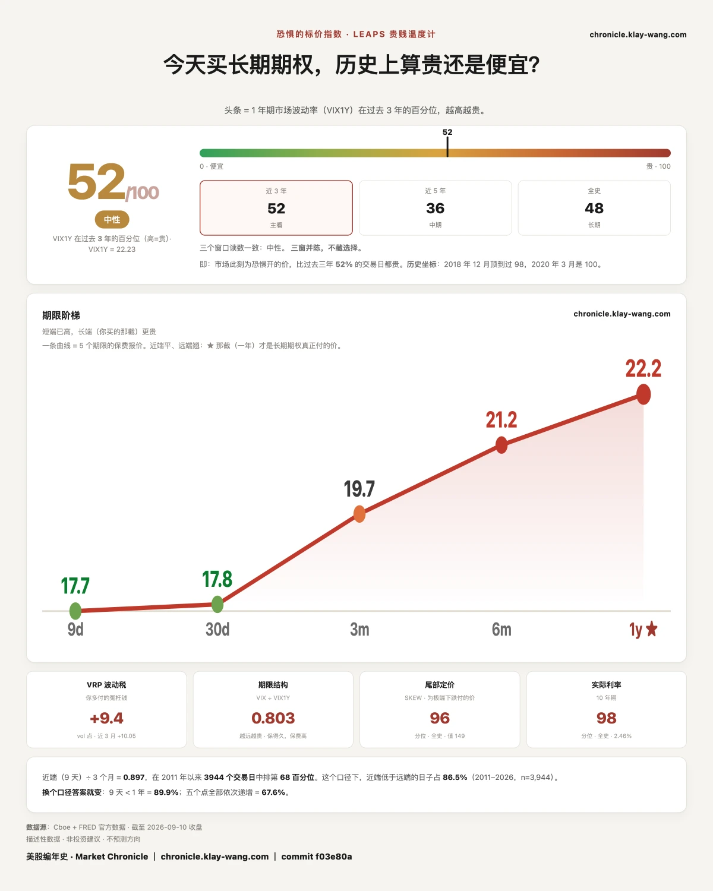
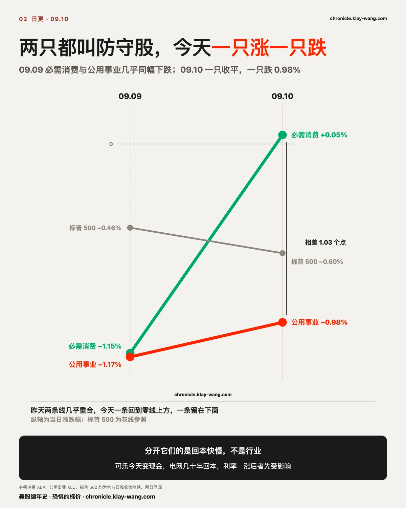
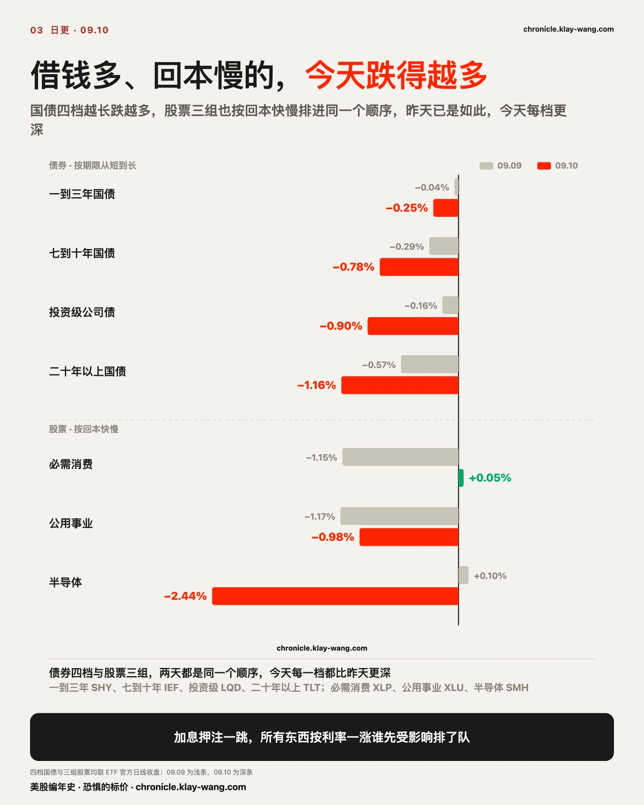
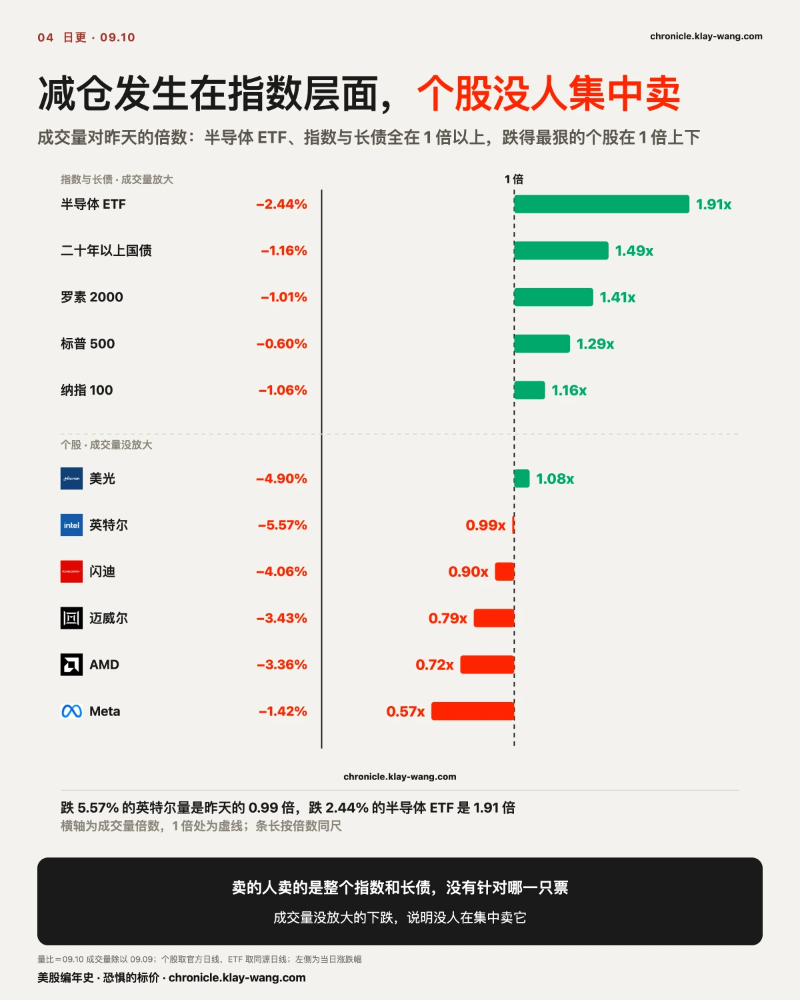
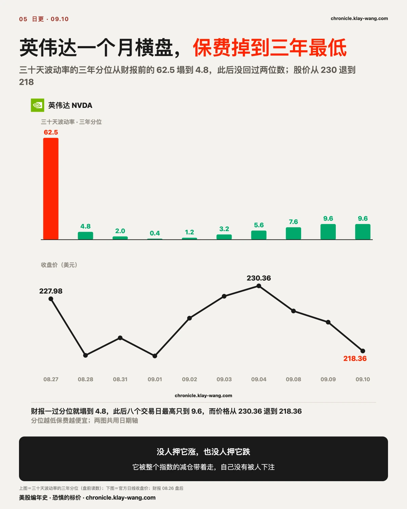
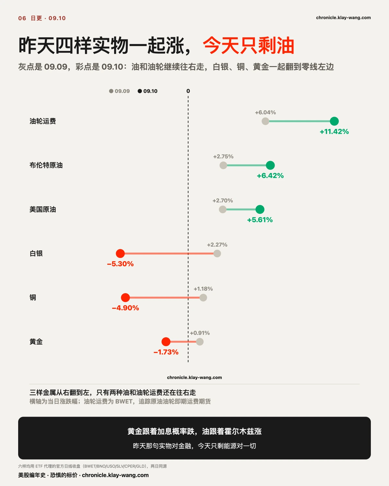

恐惧的标价指数（Fear-Price Index）· 2026-09-10 · 读数 52.4/100：一年期波动率 VIX1Y 为 22.23，处于近三年第 52.4 百分位，高即贵。逐日台账与口径 → chronicle.klay-wang.com · 转载注明：恐惧的标价指数 · Market Chronicle
三年分位从 47.6 抬到 52.4，回到一半以上。五档期限逐档：九天 17.70、一个月 17.84、三个月 19.73、六个月 21.17、一年 22.23，逐档读数见图。
同一条线在保费上的样子：九天那档一天抬了 2.11，一年期只抬 0.26。明天 CPI 那一格被单独加了价，一年之后那一格几乎没动。
买保护的人买的是整个指数，没有挑个股。标普三十天保费从 13.11 抬到 14.35，纳指从 19.02 抬到 20.12；同一天英伟达从 33.79 退到 33.10，Meta 从 39.88 退到 38.79，特斯拉从 41.28 退到 40.16。

8 月 PPI 同比 5.4%，比预期的 5.3% 高。但核心环比只有 0.2%，比预期的 0.3% 低；服务只涨 0.1%，是 5 月以来最小的一次。真正把头条抬起来的是能源涨 4.2%，其中柴油一项涨 24.1%，一项就占了商品涨幅的三分之一以上。
数据说贵的是油。但市场直接用脚投了票：CME 的 9 月加息概率从数据前的 60.2% 跳到 75%。
下午一点财政部拍卖 220 亿美元三十年期国债，得标 5.308%，比上个月那次高 9.2 个基点。间接投标者拿走 79.5%，要的人不少，只是要的价更高。
押注一跳，下面每一节都是同一件事的一格：利率一涨，谁先受影响。
必需消费和公用事业平时都属于防守股。昨天必需消费跌 1.15%，公用事业跌 1.17%，两只挨着。今天必需消费收 83.09，涨 0.05%；公用事业收 42.52，跌 0.98%。
行业分类解释不了这件事，回本快慢解释得了。必需消费卖的是可乐、纸巾、洗发水，货今天上架今天就变成现金。公用事业是电网、水厂、管道，一根线埋下去要几十年才回本，而且账上压着大笔长期借款。利率一涨，第二种先受影响。

国债把这个顺序摆得更干净。今天一到三年跌 0.25%，七到十年跌 0.78%，投资级公司债跌 0.90%，二十年以上跌 1.16%。从短到长排下来，一档比一档跌得多，中间没有一个例外。昨天也是这个顺序：0.04%、0.29%、0.16%、0.57%。今天每一档都比昨天更深。

股票里回本最慢的一族是半导体：今天的资本开支要等两三年后的订单，2028 年的产能现在就开始花钱。它这五天 09.03 涨 0.39%，09.04 涨 2.61%，09.08 涨 1.19%，09.09 涨 0.10%，今天跌 2.44%，四天涨的第一次转负。软件的订阅费按月收，今天跌 0.62%，是它连跌四天里最浅的一天。
存储那条链跌得最狠：英特尔跌 5.57%，美光跌 4.90%，闪迪跌 4.06%，戴尔跌 5.35%。它们正是过去一个月涨得最多的那一批。
花旗的会议纪要提到英伟达下一代机架可能少放 HBM、改用光互连连机架，存储被抢了位置。今天这条解释不成立。光互连自己跌得更狠，Lumentum 跌 5.39%，比半导体 ETF 的 2.44% 深了一倍多。钱没有从存储换到光，两边是一起被卖的，因为两边都是回本最慢的那一头。
盘后甲骨文交了一份对照。它是借钱多、回本慢的标本：一个季度资本开支 285 亿美元，自由现金流负 54 亿。正常盘它跟着这条线跌 5.38% 收 152.94；盘后财报给出待履约订单 6,640 亿美元、约一半在 36 个月内转成收入，自由现金流亏损比市场预估的负 95.6 亿少了四十亿，股价盘后涨 4.35% 到 159.59。白天按回本慢卖它，晚上它拿出了回本的时间表。盘后价不算收盘，明天再看。
同一天微软传出要把数据中心容量从 12 吉瓦扩到 2032 年的 38 吉瓦，四家巨头未来几年合计承诺近 2.4 万亿美元。回本慢的那一头，还在往里加钱。
把今天的几件事连起来，是一个圈，转一圈又回到自己头上：巨头加资本开支，靠发债和客户预付来付；债发得多，长端利率往上走，昨天 10 年期招标 4.834% 是该期限史上最高，今天 30 年期 5.308%；利率一涨，借钱多、回本慢的资产先被重新定价；而借钱多、回本慢的，正是在发债扩产的这批人自己，和给他们供货的存储、代工、光互连。今天这句利率一涨谁先受影响，就是这个圈转了一格。 它什么时候停，看两个数：长端对发债日不再起反应，或者客户预付的比例把发债那个口子顶掉。甲骨文这季四成资本开支由客户预付，下季看这个比例往哪走。
谁在排这个队，看成交量。
跌得最狠的那批票，成交量没有放大：英特尔是昨天的 0.99 倍，美光 1.08 倍，闪迪 0.90 倍，AMD 0.72 倍，迈威尔 0.79 倍。成交量没放大的下跌，说明没有人在集中卖它。
放大的在另一头：半导体 ETF 成交量是昨天的 1.91 倍，二十年以上国债 1.49 倍，罗素两千 1.41 倍，标普 1.29 倍。卖的人卖的是整个指数和长债，没有针对哪一只票。

英伟达是这件事最极端的例子。先把前提改一句：从 08.10 到 09.09 这二十二个交易日，它跌 0.13%，是横盘。同期闪迪涨 45.53%，美光涨 17.12%，AMD 涨 7.81%。这一个月真正在跌的是博通，跌 14.82%。英伟达离一年高点只有 5.44%，是这一组里回撤最小的。
最近四天是真的在退：09.04 收 230.36，然后跌 2.01%、跌 0.91%，今天跌 2.37% 收 218.36。
可它的保费在三年最低位。三十天波动率的三年分位，08.27 财报前还是 62.5，财报一过 08.28 塌到 4.8，之后八个交易日再没回到两位数以上，今天 9.6，是我们跟的二十一只票里最低的一档。
价格在往下走，没人押它涨，也没人押它跌。它被整个指数的减仓带着走，自己没有被人下注。愿意为它下注的钱去了三个月以后：12 月到期的 245 看涨今天成交 40,620 张，是持仓量的四倍，行权价比收盘高 12%。

商品也按同一条线分开了。
昨天写下的那句：今天的同步下跌是实物对金融资产的重定价。当时原油涨 4.26%，白银涨 2.49%，铜涨 1.77%，黄金涨 1.20%，而股债汇币全跌。
今天布伦特涨 6.42%，美油涨 5.61%。白银跌 5.30%，铜跌 4.90%，黄金跌 1.73%。四条腿塌了三条。
今天涨得最凶的东西不在油价上，在运油的船上。追踪原油油轮即期运费期货的那只 BWET 涨 11.42%，收 650，一年涨了 46 倍。它没有基本面，没有股息，整只基金就是一张押霍尔木兹继续堵着的单子，六月停火传闻那次四个交易日跌掉 41.2%。
黄金掉队和油站住，跟的不是同一件事。瑞银的 Joni Teves 昨天那份贵金属评论写得很清楚：8 月非农 16.2 万，约为预期的三倍，加息概率当时已升到约 62%，可金价的回调幅度有限。他们的读法是市场已经把紧缩预期消化掉了大半。今天加息押注又跳了十几个点，黄金跌 1.73%，落在他们说的那种可控回调里。油跟的是霍尔木兹，不跟联储，所以它没跌。
瑞银同时给了一个不对称：加息落地，金价小跌，季节性实物需求和官方部门逢低买入会托住；不加息，金价的上行反而更猛，因为那会被读成政策失误。
明天同一时间公布 8 月 CPI。市场给的分档很直白：核心环比 0.1% 或更低，大概率按兵不动；0.3% 或更高，基本确定加息；正好 0.2%，谁也说不准。这就有了一条明天就能对的账：加息落地黄金小跌，不加息黄金大涨。今天它已经先跌了 1.73%，明天看它跌得够不够小。

昨天立的作废条件写得很死：如果第二天黄金和债券同向上涨，这个读法收回。
今天黄金跌 1.73%，二十年以上国债跌 1.16%。按写死的条件，它没有被触发。另一条反证也没出现：昨天写的是真避险时必需消费和公用事业应该跑赢，今天必需消费收平，公用事业跌 0.98%，两只都没跑赢标普的 −0.60%。
判据没写错，是写得不够。当时只想到实物和金融两边，没想到实物内部也会分家。今天四样实物里三样跟着金融资产一起跌，只有油还站着。
昨天那句话改写成今天的版本：被重新定价的是能源对其他一切，不是实物对金融。它的可推翻条件跟着改：明天 CPI 之后若油和黄金同向下跌，则能源那一侧也只是跟着加息概率走，这条读法收回。
09.08 立的那条有两半：收盘站住 100，且 09.18 到期的 100 看涨持仓比 09.08 少。
第一半惊险。今天英特尔跌 5.57% 收 100.32，盘中最低 99.34，离 100 只差 32 美分。
第二半今天才测得到。09.18 那档 100 看涨的持仓，09.08 是 52,210 张，昨天结算后 41,499 张，今天 40,622 张，减了 10,711 张，两成多。旧仓在兑现，成立。
同一张表里另一半也对上了：09.08 那天新买的 115 看涨 31,038 张，持仓从 16,816 涨到 35,948，六成留下了。留下的那批今天报价 0.47，比 09.08 买入时的 1.70 跌了 72%。判断对了，追高的人没对。